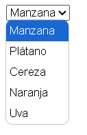

las etiquetas select y option en HTML se utilizan para crear controles de formulario que permiten a los usuarios seleccionar una o más opciones de una lista desplegable. Son esenciales para formularios que requieren la elección de elementos predefinidos.
La etiqueta select define un control de selección desplegable. Puede contener varias etiquetas option que representan las diferentes opciones disponibles para el usuario.
Ejemplo de estructura básica:1 <select id="frutas" name="frutas">
2 <option value="manzana">Manzana </option>
3 <option value="platano">Plátano </option>
4 <option value="cereza">Cereza </option>
5 <option value="naranja">Naranja </option>
6 <option value="uva">Uva </option>
7 </select>
La etiqueta option se utiliza dentro de select para definir las opciones que los usuarios pueden elegir.
Atributos de option: